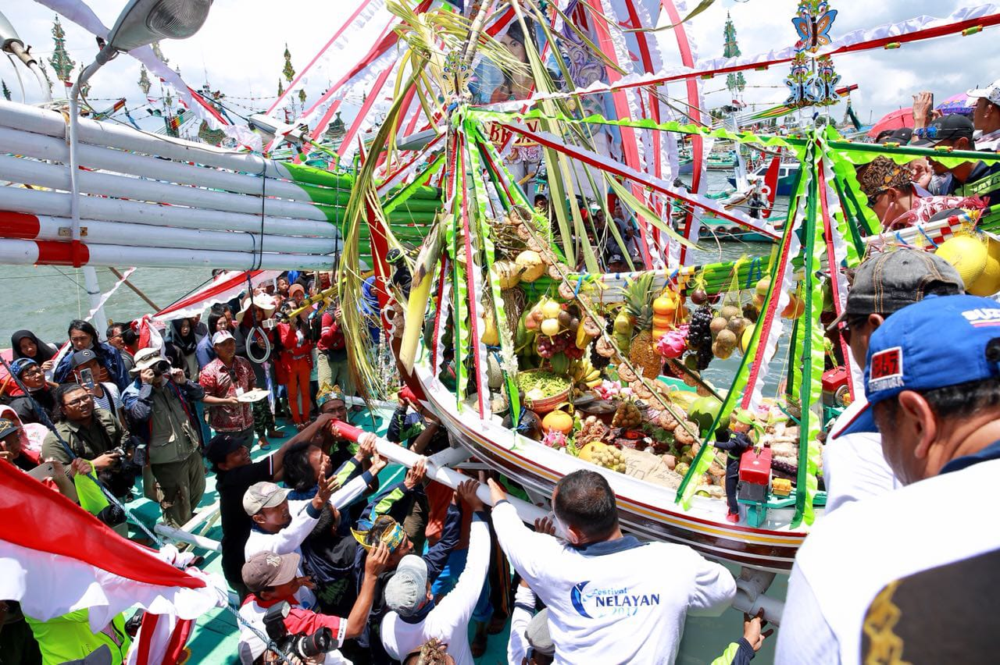
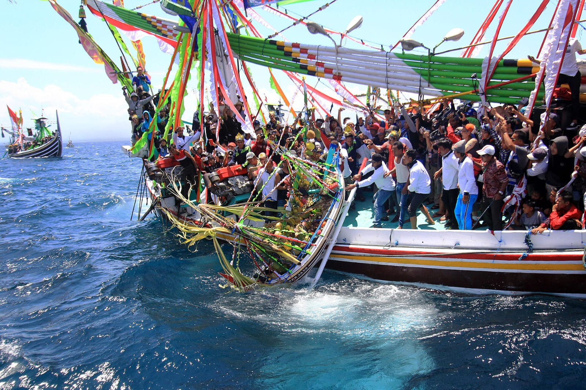
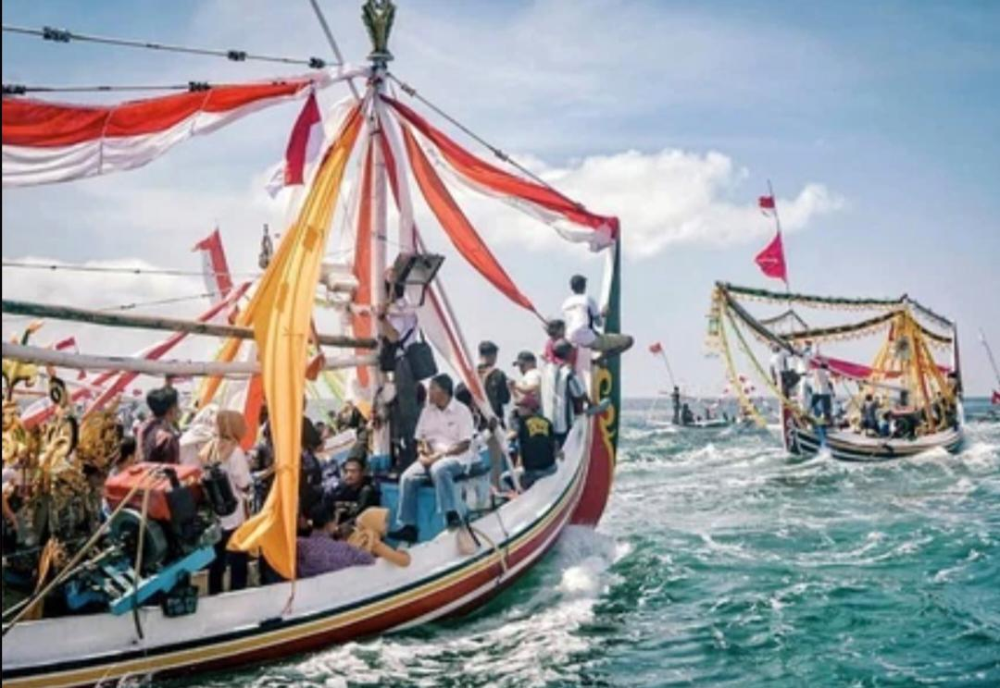

Sejarah
Tradisi Petik Laut merupakan salah satu warisan budaya masyarakat nelayan pesisir Banyuwangi, terutama di daerah Muncar yang dikenal sebagai salah satu pelabuhan perikanan terbesar di Indonesia. Tradisi ini telah berlangsung selama puluhan bahkan lebih dari seratus tahun dan diwariskan secara turun-temurun oleh para nelayan.
Beberapa sumber menyebutkan bahwa tradisi ini sudah dilaksanakan sejak tahun 1901, sementara catatan lain menyebutkan sekitar tahun 1927. Lahirnya tradisi ini berawal dari rasa syukur masyarakat nelayan atas hasil tangkapan ikan yang melimpah. Kehidupan masyarakat Muncar yang sangat bergantung pada laut membuat mereka memiliki hubungan yang erat dengan alam.
Karena itu, setiap tahun mereka mengadakan ritual syukur dan doa bersama agar diberikan keselamatan saat melaut serta dijauhkan dari berbagai musibah. Hingga saat ini Petik Laut masih terus dilestarikan dan menjadi salah satu daya tarik wisata budaya terbesar di Banyuwangi.
Makna Filosofis
Tradisi Petik Laut memiliki makna yang sangat dalam bagi masyarakat nelayan:
Ungkapan Rasa Syukur
Petik Laut merupakan wujud rasa terima kasih kepada Tuhan Yang Maha Esa atas hasil laut yang melimpah dan kehidupan yang diberikan kepada para nelayan.
Permohonan Keselamatan
Laut menyimpan banyak tantangan dan risiko. Oleh karena itu, masyarakat nelayan memanjatkan doa agar diberikan perlindungan, keselamatan, dan kemudahan dalam mencari nafkah di laut.
Harmoni dengan Alam
Tradisi ini mengajarkan bahwa manusia harus menghormati dan menjaga alam yang menjadi sumber kehidupan mereka. Laut tidak hanya dimanfaatkan, tetapi juga dihargai dan dijaga kelestariannya.
Kebersamaan dan Gotong Royong
Pelaksanaan Petik Laut melibatkan seluruh masyarakat, mulai dari nelayan, tokoh agama, tokoh adat, hingga masyarakat umum. Hal ini mencerminkan semangat persatuan dan gotong royong yang kuat.
Pelestarian Budaya Leluhur
Tradisi ini menjadi bukti bahwa masyarakat Banyuwangi tetap menjaga warisan budaya nenek moyang mereka di tengah perkembangan zaman modern.
Prosesi Pelaksanaan
Tradisi Petik Laut biasanya berlangsung selama beberapa hari dan memiliki beberapa tahapan penting:
1. Persiapan dan Doa Bersama
Sebelum puncak acara, masyarakat mengadakan pengajian, pembacaan Yasin, tahlil, serta doa bersama untuk memohon kelancaran acara dan keselamatan para nelayan.
2. Pembuatan Gitik
Masyarakat membuat sebuah perahu kecil yang disebut Gitik. Perahu ini dihias dengan warna-warni yang menarik dan diisi berbagai sesaji berupa hasil bumi, buah-buahan, makanan tradisional, serta simbol-simbol kemakmuran.
3. Kirab atau Arak-arakan Sesaji
Gitik kemudian diarak dari rumah sesepuh atau lokasi tertentu menuju pelabuhan. Prosesi ini diiringi musik tradisional, doa, dan antusiasme masyarakat yang memadati jalanan.
4. Parade Kapal Hias
Puluhan hingga ratusan kapal nelayan dihias dengan bendera, pita warna-warni, dan berbagai ornamen menarik. Kapal-kapal tersebut kemudian berlayar bersama menuju tengah laut.
5. Larung Sesaji
Inilah inti dari tradisi Petik Laut. Gitik yang berisi sesaji dilarung atau dilepaskan ke tengah laut sebagai simbol rasa syukur dan harapan akan keselamatan serta keberkahan.
6. Doa Penutup
Setelah prosesi pelarungan selesai, masyarakat kembali berkumpul untuk berdoa bersama dan mengadakan berbagai kegiatan hiburan rakyat.
Fakta Menarik
Tanggal 15 Suro
Tradisi Petik Laut selalu dilaksanakan pada tanggal 15 Suro dalam kalender Jawa atau bertepatan dengan bulan Muharram dalam kalender Hijriah.
Pusat Perikanan Terbesar
Muncar merupakan salah satu pusat perikanan terbesar di Indonesia, sehingga tradisi Petik Laut di daerah ini menjadi salah satu yang paling meriah.
Parade Kapal Warna-Warni
Puluhan kapal nelayan dihias semenarik mungkin sehingga terlihat seperti festival kapal warna-warni di tengah laut.
Perahu Gitik
Perahu kecil yang digunakan untuk membawa sesaji memiliki nama khusus, yaitu Gitik.
Daya Tarik Wisatawan
Tradisi ini mampu menarik ribuan wisatawan dan fotografer setiap tahun karena keindahan parade kapal serta suasana budayanya yang unik.
Hiburan Rakyat
Selain ritual adat, biasanya juga diadakan pasar malam, pertunjukan seni, dan berbagai hiburan rakyat yang berlangsung selama beberapa hari.
Galeri




